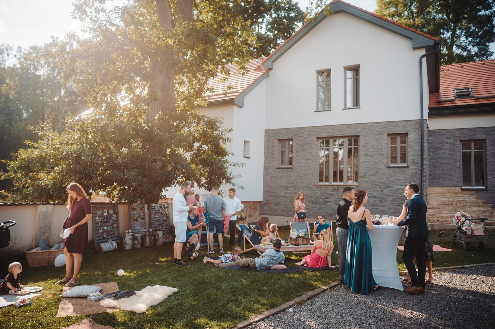
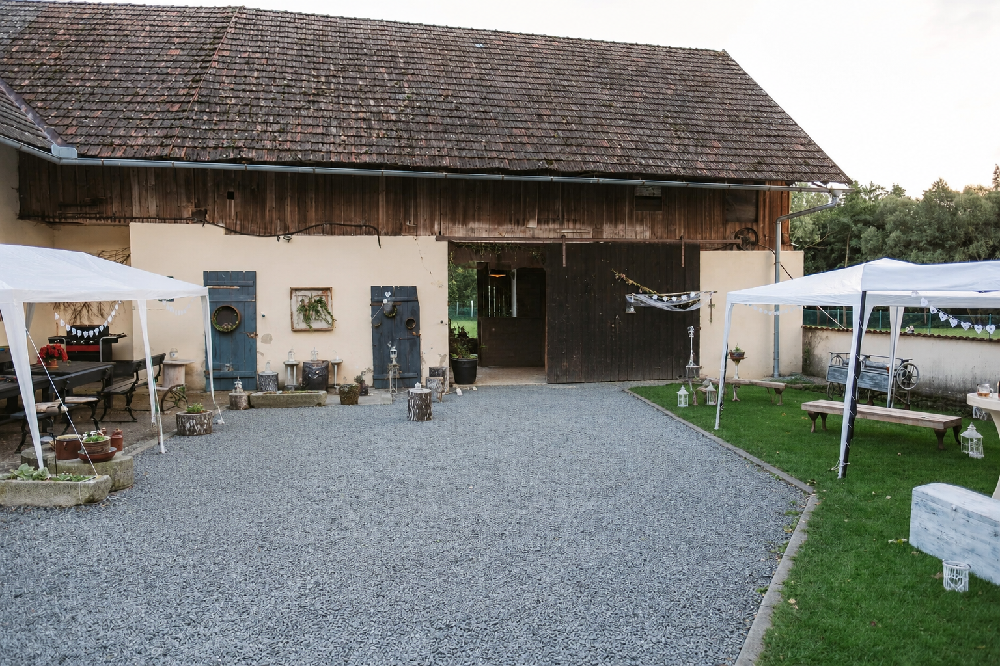
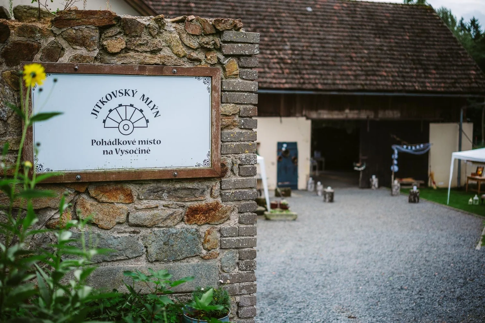
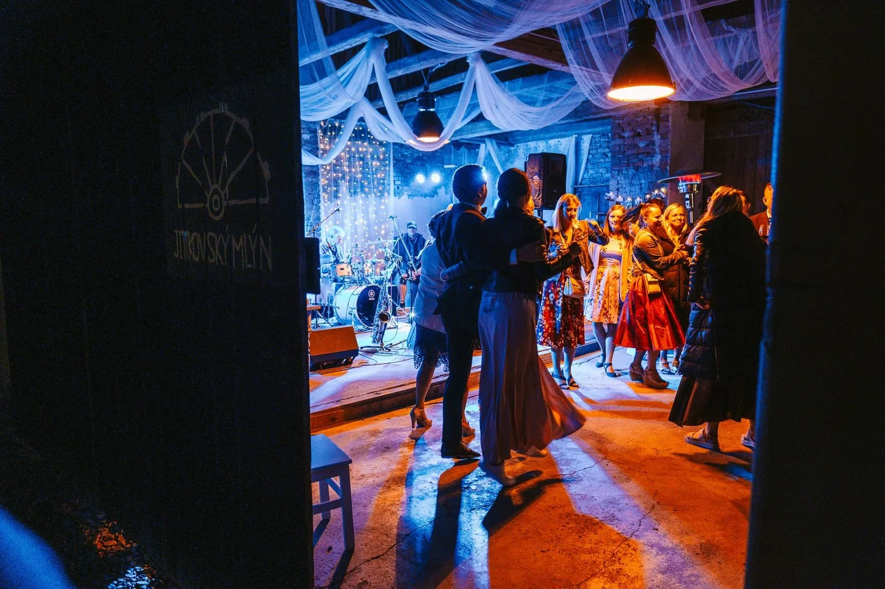
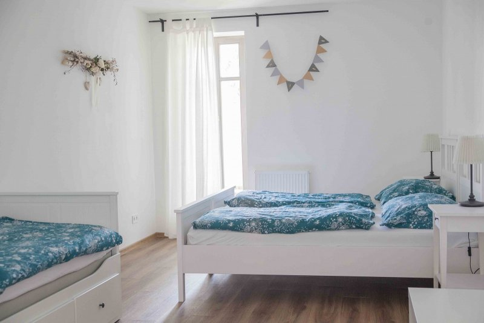
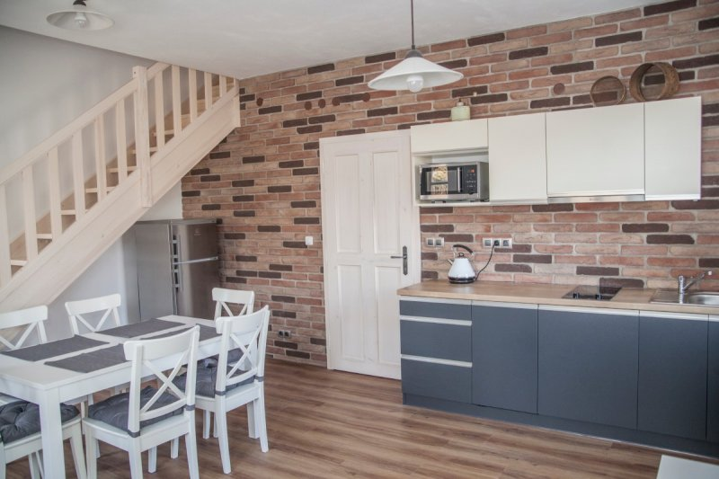
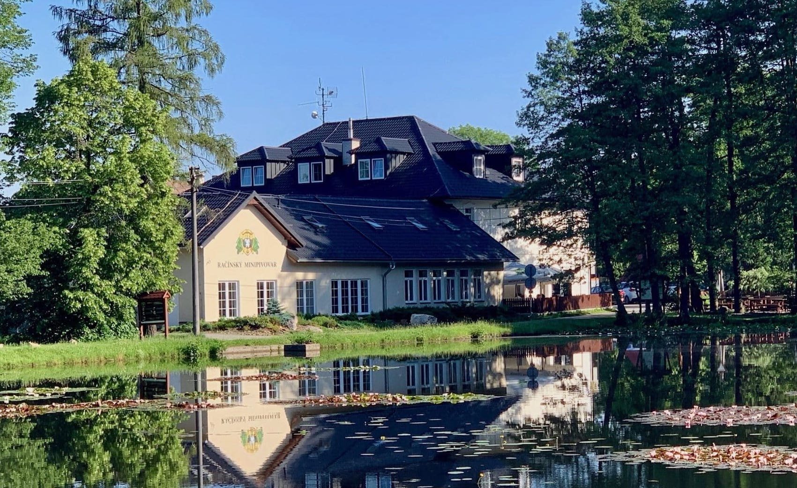
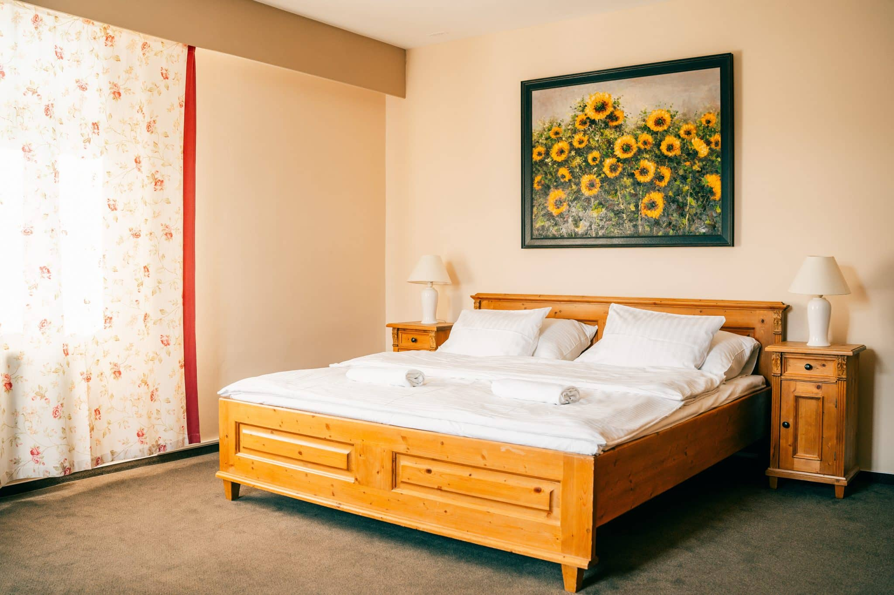

Bereme se. A rádi bychom ten den prožili s vámi.
Program

 Více fotek místa
Více fotek místa




Místo
Jitkovský mlýn
Starý mlýn u rybníka kousek za Chotěboří — louky, stromy a klid Vysočiny. Obřad bude venku, hostina uvnitř. Všechno na jednom místě.
- Adresa Jitkov 32, 583 01 Chotěboř
-
Příjezd
45 minut z Pardubic · 45 minut z Dlouhého
- Parkování Na místě, hned za mlýnem
Ubytování
-
Na mlýně
Tady bude místo pro rodinu
Fotky


-
V okolí
10 minut autem od mlýna vám zařídíme ubytování včetně dopravy do/z mlýna Penzion Račín →
Fotky


Dary
„Jó, vždyť víš, štěstí je krásná věc... štěstí je tak krásná a přepychová věc, ale prachy si za něj nekoupíš."
Co na sebe
Společenský oděv v přírodních tónech — tak, aby ladil s místem. Část dne strávíme venku, myslete i na pohodlné boty.
- krémová
- písková
- karamel
- mocca
- hnědá
Dobré vědět
Můžeme vzít děti?
Doplníme.
Můžu tam přespat?
Doplníme.
Kde zaparkujeme?
Doplníme.

Těšíme se na vás
Martin & Michaela